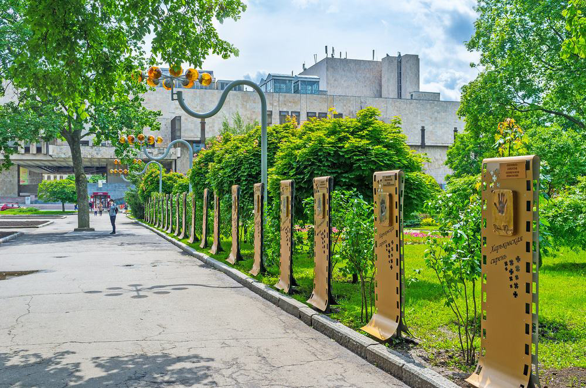

About Kharkiv
Kharkiv, one of Ukraine’s largest cities, is rich in history and
cultural significance was founded in 1654. Its location on the
crossroads of important trade routes allowed it to develop quickly
into a bustling commercial and industrial center. By the 18th
century, Kharkiv had grown into a prominent hub of education and
culture. The establishment of Kharkiv University in 1804, one of the
oldest universities in Eastern Europe, attracted scholars,
intellectuals, and students from across the region. The city’s
intellectual atmosphere contributed to advancements in literature,
science, and art throughout the 19th century. During the early 20th
century, Kharkiv played a pivotal role in Ukraine’s
industrialization. It became an industrial powerhouse, particularly
in the fields of machinery and technology. In fact, from 1919 to
1934, Kharkiv served as the capital of Soviet Ukraine, further
solidifying its political and economic importance. Throughout the
20th century, Kharkiv continued to be a significant center for
scientific research, engineering, and education, with many notable
achievements in these fields. Its combination of historical depth,
academic prominence, and industrial development has shaped Kharkiv
into the modern, vibrant metropolis it is today.

Taras Shevchenko Garden
Taras Shevchenko Garden in Kharkiv is a prominent and historic
park located in the city center. It was founded in the early 19th
century and is one of the oldest parks in Ukraine. The garden is
named after the renowned Ukrainian poet and artist, Taras
Shevchenko, with a notable statue of him situated at the entrance.
The park is a favorite leisure destination for both locals and
tourists, offering scenic walking paths, lush greenery, and
beautiful flowerbeds. Throughout the year, the park hosts various
cultural events and festivals, adding to its vibrant atmosphere.
Shevchenko Garden is a symbol of Kharkiv’s rich cultural heritage
and a peaceful oasis in the bustling city.
Central Park for Culture and Recreation
A few minutes up from the centre is a 130-hectare park that has a
few days out rolled into one. First it’s a sophisticated and
well-maintained city garden, laced with tree-lined avenues,
expansive lawns, ponds sculptures, a gazebo and a Temple of Diana.
But there are also plenty of family-oriented amusements.
The park has a Ferris wheel that dominates the skyline and has a
far-reaching view of the city, along with an aerial ropeway,
carousels, a haunted house and even a roller coaster. Everything
is sheltered in clean woodland and during the summer holidays
there are live shows for kids on the stage.
Feldman Ecopark
Feldman Ecopark in Kharkiv is a large recreational and
environmental complex founded in 2011 by Oleksandr Feldman. It
serves as both a zoo and a wildlife sanctuary, offering visitors
the chance to see a variety of animals, including lions, tigers,
and bears. The park provides free admission, making it accessible
to people of all backgrounds. In addition to the zoo, the park
offers animal-assisted therapy programs for children with special
needs, using animals like horses and dogs to aid in therapy.
Educational programs focused on environmental awareness and
conservation are regularly offered for both children and adults.
Monument of Lovers
The Monument of Lovers in Kharkiv is a well-known romantic
sculpture located near the city's Palladium Fountain in Shevchenko
Park. Unveiled in 2002, the monument depicts a couple in a loving
embrace, symbolizing eternal love and devotion. It has become a
popular site for newlyweds and couples, who often visit it as part
of their wedding day traditions. The bronze sculpture captures a
tender moment between the two figures, making it a symbol of
romance and affection in Kharkiv. Over the years, the monument has
become one of the city's iconic landmarks, attracting both locals
and tourists. Its location in the park adds to its charm, offering
a peaceful and picturesque backdrop for visitors.
Historical Museum
This museum, stranded on Constitutional Square has a slightly odd
position as it seems to be facing in the wrong direction, fronting
Universytetska Street instead of the plaza. You’ll know the museum
by its glass facade, and historic cannons and tanks guarding the
entrance. One of these is a British-made Mark V, dating to 1918
and captured by Soviets in the Ukrainian War of Independence in
1919. Holding 300,000 exhibits, the museum is one of the largest
in its field in Ukraine and in the collection are weapons, medals,
coins, uniforms, paintings and photographs, all with a focus on
the War of Independence (1917-1922) and the Second World War
(Great Patriotic War).
Kharkiv National Academic Opera and Ballet Theatre
Khatob is one of the largest and most prestigious cultural
institutions in Ukraine. Located on Sumska Street, it is renowned
for its striking Soviet-era modernist architecture, completed in
1991, making it a prominent landmark in Kharkiv. The theatre
offers a wide repertoire of opera and ballet performances,
featuring both classic and contemporary works, and is a hub for
cultural and artistic events in the city. Khatob’s spacious and
beautifully designed interior includes state-of-the-art stages and
seating, making it a favored destination for lovers of the
performing arts. The building itself is an architectural icon,
often admired for its geometric, minimalist design.
Annunciation Cathedral
The Annunciation Cathedral is the most beautiful temple in Kharkiv
– one of the largest cities in Ukraine and its former capital. The
history of the cathedral dates back to the 17th century when it
was not a monumental cathedral, but a small wooden church. In its
current form, it was rebuilt only in 1789. The temple impresses
with its solemnity, rich in interior decoration. Great Ukrainian
artists painted the walls of the Annunciation Cathedral artists.
This temple is a favorite attraction for tourists not without good
reason.
Sumska Street
Sumska Street in Kharkiv is one of the city’s most prominent and
picturesque streets, known for its stunning architectural
diversity. The street is lined with beautiful Neoclassical,
Baroque, and Art Nouveau buildings, showcasing Kharkiv’s rich
history and cultural development. Notable landmarks include the
Kharkiv Opera and Ballet Theatre and the Kharkiv Regional
Administration building. The street’s mix of old-world charm and
modernity makes it a favorite for both tourists and locals,
offering an elegant urban atmosphere.
The Assumption Cathedral
The Assumption Cathedral and its slender bell tower, resembling a
candle, can be seen from almost anywhere in the city. The
Cathedral of the Assumption of the Blessed Virgin Mary at 11
Universitetska str., is the oldest Orthodox church in Kharkiv. The
church was built back in 1658, but soon the wooden structure was
dilapidated, and a stone cathedral was built, which has not
survived to this day. A modern baroque church with elements of
folk architecture was built in 1777, and completed in 1783. The
Alexander bell tower (89.5 m) is considered to be the decoration
of the cathedra